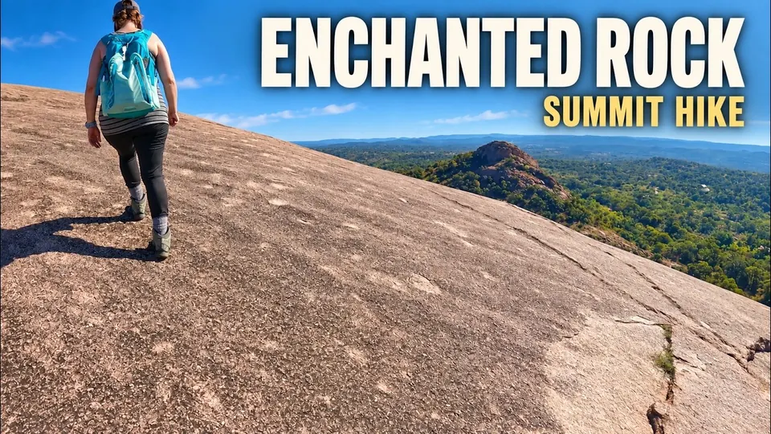

Destination
Texas
Road trips, state parks, country churches, and river country: Big Bend, Devils River, Caddo Lake, Enchanted Rock, Seminole Canyon, and small towns across the state.
Films
Shorts
Subscribe on YouTube
Watch these films, and new ones as they are published, on the Totin My Pack channel.